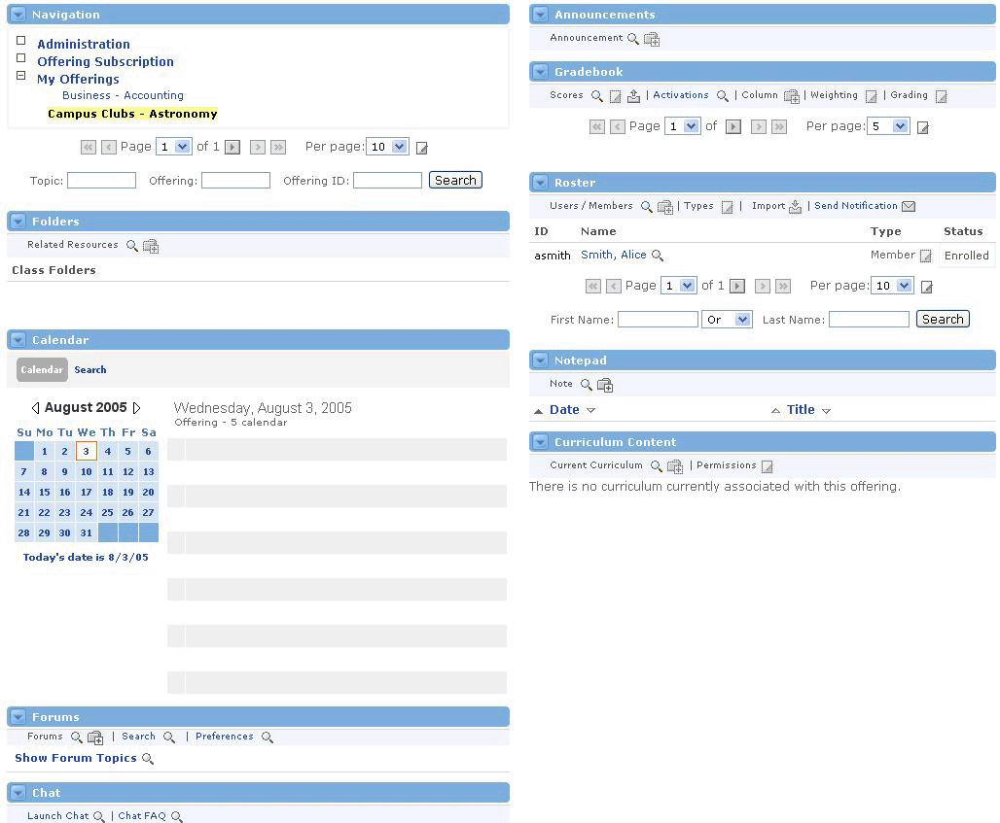
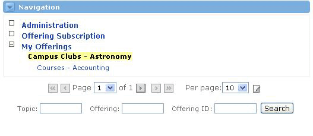
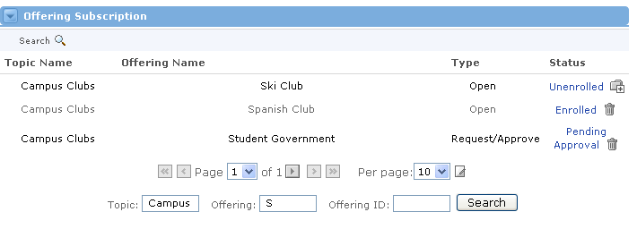

Introduction to Groupware Administration Channels
Looking for more help options? Click Here
Groupware Administration : Overview
In this chapter, you will learn how to administer the many facets of the Collaborative Groupware system. Among the things you should understand after this chapter are:
- Roles and Permissions - You will be able to define the difference between system roles and offering roles, as well as add, edit, or delete roles for each.
- User Administration - You will be able to import or add new users to the system. You will be able to search for any users currently in the system, and edit their user information.
- Topic Administration - You will be able to define what a topic is, and you will be able to add, view, edit, and delete topics.
- Offering Administration - You will be able to define what an offering is, and you will be able to import, add, view, edit, delete, and export offerings.
By now you may have noticed that all of the channels on the Groupware tab are contained within one large channel, the Groupware Channel. The Groupware channel acts as a dashboard for all of the content of a topic offering.

Restrictions
Because the Groupware channel surrounds all of the other channels within the Collaborative Groupware, these channels cannot be personalized like those outside the Collaborative Groupware. The Groupware channel defines these settings and holds the other channels to those settings for the sake of the overall functionality and feel of the learning environment.
The Navigation Channel
The Navigation Channel allows Collaborative Groupware users to access administrative functionality and access content for specific offerings. It contains three main sections - Administration, Offering Subscription, and My Offerings.

Administration
The Administration link reveals a number of channels related to the management of user accounts, roles and permissions, topics, offerings, and importing capabilities. A user without admin permissions may be permitted to change their password and email address here, but the remainder of functionality will likely be reserved for users with administrative duties.
The channels offered from the Administration link within the Navigation channel include:
- Role Administration
- Import Channel
- User Administration
- Topic Administration
- Offering Administration

Offering Subscription
The Offering Subscription link leads to the Offering Subscription Channel, where a user can search for offerings by Topic Name, Offering Name, or Offering ID. Once the search returns a list of the available offerings, the user can pursue the enrollment process.

My Offerings
The My Offerings link is only visible to users who are enrolled in and/or sponsors of at least one offering. If a user is not enrolled in any offerings, the link will not show up in the Navigation channel.
|
When the My Offering link is visible, the channel also displays a linked list of all enrolled offerings for that particular user. Users can see the specific offering-related channels by clicking on any of the offering links. |
|
|
The label for My Offerings may have been customized by your institution and could appear with another title. |